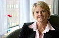
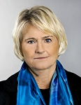

Siv Pam Fredman
Professor, fil dr i neurokemi, rektor och samordnare vid Göteborgs universitet.
| Född: | 1950-05-13 Gustavi fs, Göteborgs stad. [1] |
|---|
| Levde Sambo: | 1982 Skålsnäckan 9, Örgryte fs, Göteborgs kn. [2] |
|---|
| Skilsmässa: | före 1985 Örgryte fs, Göteborg. |
|---|
| Barn: |
|---|
| Jennie Cristina Fredman (1976 - ) |
| Levde: | Skår 36:10, Pilfinksg 4, Göteborg, Öregryte fs, Göteborgs kn. [3] |
|---|
| Vigsel: | 1985-09-28 Göteborg, Öregryte fs, Göteborgs kn. [3] |
|---|
| Levde: | 2007 Pilfinksgatan 4, Göteborg. [4] |
|---|
| Barn: |
|---|
| Pernilla Josefine Ivarsson Fredman (1986 - ) |
| Marcus Ivarsson Fredman (1988 - ) |
Noteringar
Pam Fredman, född 1950 i Göteborg, är en svensk forskare i neurovetenskap och rektor för Göteborgs universitet.
Pam Fredman blev civilingenjör i kemiteknik vid Chalmers tekniska högskola 1973 och filosofie doktor i neurokemi 1979. Hon utnämndes 1997 till professor i neurokemi vid Göteborgs universitet. Hon var chef samt dekanus för Sahlgrenska akademien 2003¿2006 och är sedan 1 juli 2006 rektor för Göteborgs universitet, då hon efterträdde Gunnar Svedberg.
Fredman invaldes 2008 som ledamot av Ingenjörsvetenskapsakademien.
H.M. Konungens medalj 12:e storleken i serafimerordens band 2008-06-06
Utdelning på Drottningsholms slot tisdagen den 10 juni 2008.
www.kungahuset.se/monarkinhovstaterna/densvenskamonarkin/medaljer/medaljforlaningar/arkivmedaljforlaningar/medaljforlaningar20080606.5.36df73941192994694f80007190.html
Rektor Pam Fredman - Nominerad till årets ledare 2012
___________________________________________________________________________
Curriculum vitae - CV
Pam Fredman
Born May 13th, 1950, in Göteborg, Sweden
Married , 2 daughters and one son (born 1976, 1986 and 1988, respectively)
.
1979 Ph.D., University of Gothenburg, sept 29,1979. Title of thesis "Structure
and Function of Gangliosides".
1981 Assistant Professor (docent) in Neurochemistry, Faculty of Medicine,
University of Gothenburg, 1981.
1997 Professor in Neurochemistry from May 1st, Dept Clinical Neuroscience,
The Sahlgrenska Academy at University of Gothenburg
Positions
Current
2006- Vice Chancellor at University of Gothenburg (1st July)
Other
2006- Member of the board of the Associations of Swedish Higher
Educations, SUHF
2008- Chairman of the board of the Associations of Swedish Higher
Educations, SUHF
2008- Council member of European University Association EUA
2009- Member of the EUA Research Policy Working Group, RPWG
2010- Chair of the Nordic University Association, NUS
Previous
1997- Professsor at the Institute of Clinical Neuroscience, dept. of Psychiatry and
Neurochemistry, University of Gothenburg.
1994-1997 Associate professor at the Institute of Clinical Neuroscience, dept. of
Psychiatry and Neurochemistry, University of Gothenburg, Gothenburg.
1988-1994 Research position at the Swedish Medical Research Council
1983-1988 Research assistant at Dept of Psychiatry and Neurochemistry, Medical
Faculty , University of Gothenburg.
1982-1983 Post doc, at National Institute of Arthritis, Metabolism and Digestive
Diseases, National Institutes of Health, Bethesda, Maryland, Head:Dr.
Victor Ginsburg
1980-1982 Research assistant at Dept. of Psychiatry and Neurochemistry, Medical
Faculty
1974-1980 Employed as engineer at Dept of Psychiatry and Neurochemistry,
Medical Faculty, University of Gothenburg.
Official University Commissions
1995-1997 Head of the Institute of Clinical Neuroscience, Medical Faculty,
University of Gothenburg.
1997-1999 Vice dean at the medical faculty in Gothenburg.
1996- Chairman for the board of Bioscience at University of Gothenburg.
2003-2004 Head of the Sahlgrenska Academy at University of Gothenburg.
2001-2003 Pro-preses at the Sahlgrenska Academy at University of Gothenburg.
Tutor PhD students
Olle Nilsson Thesis defended 1982
Pia Davidsson Thesis defended 1989
Johan Gottfries Thesis defended 1990
Jonas Bergqvist Thesis defended 1996
Camilla Hesse, thesis defended 1999
Kristina Hedberg Thesis defended 2001
Zarah Pernber Thesis defended 2002
Marie Molander-Melin Thesis defended 2003
Maria Blomqvist Thesisi defended 2003
Catarina Nygren mars 2004, KI
Anna_maria Nilslied 2005
Kina Höglund, 2006
Scientific activities
2007- Member of IVA, Kungliga ingenjörsvetenskapsakademin
1996-2000 Member of the priority committee for “LUA” (research grants) grants at
University of Gothenburg.
1996-2001 President of ESN
1992-2001 Council member of the ESN, European Society of Neurochemistry.
1995-1996 Treasurer of ESN
1996-2001 Member (as president for ESN) of the board of the Federation of European
Neuroscience Societies (FENS).
1995-1999 Council member of the ISN (International Society of Neurochemistry)
1995-1999 Responsible and reviewer of new member applications to ISN
1999-2003 Member of the board of the Swedish Medical Research Council and later
Swedish Research council, medicin
1995- Member of grant review committee the Swedish Research Councilmedicin
1996-1999 Member of the scientific board of “hjärnfonden
1997- Member of the board for the National Network for neuroscience (SSFprogram)
Editorial and referee assignments
1993- Editorial Board of Journal of Neurochemistry.
1997-2006 Editorial board of J Neuroscience Research
Served as referee for scientific journals such as, Biochemical Journal; Cancer
Research; J Biological Chemistry ; Neurology; Neurochemical
International;Trends in cell biology; Acta neurologica Scandinavia
Scientific program committees
¿ Member of the International Programme Committee for the ISN Meeting in Kyoto,
Japan, 1995.
¿ Secretary of the organising committee of the Scandinavian Glioma Group Meeting
in Göteborg 1995
¿ Member of the International Programme Committee for the ESN meeting in
Groningen , Netherlands 1996
¿ Member of the International Programme Committee for the ISN meeting in St
Petersburg, 1998
¿ Member of the International Programme Committee for the joint ISN/ESN
meeting in Berlin 1999
¿ Program committee for international meeting on Neuroglycobiology in Taipe,
Taiwan 2004.
¿ Program committee for international meeting in Antigua dec 2006
Honours and awards
1982 ESN Young Honorary Lecturer 1982
1994 Fernström award for young promising researchers
Patents/Innovations
Area: Brain tumour markers. In collaboration with Prof. Darrel Bigner, Duke
University, Durham, USA, my research group identified brain tumour associated
antigens, glycosphingolipids, and produced monoclonal antibodies to some of these.
Patents were registered at Duke University. During three years Burrows Wellcome
sponsored further development of the antibodies aiming to use these in brain tumour
treatment. The project has restarted two years ago.
Area: Diabetes . Together with Prof, Karsten Buschard I have a number of patents
related to the potential of using sulfatide (glycosphingolipid) as a target molecule in
diabetes, as antigen for vaccination of diabetes type 1, and as a molecule for
prevention of the development of diabetes type 2. Right now no further development
is undergoing.
Personhistoria
| Årtal | Ålder | Händelse |
|---|
| 1950 |
|
Födelse 1950-05-13 Gustavi fs, Göteborgs stad [1] |
| 1952 |
1 år |
Maken Ulf Magnus Ivarsson Fredman föds 1952-03-04 Sankt Petri fs, Malmö stad [1] |
| 1955 |
5 år |
Brodern Alf Tony Fredman föds 1955-07-28 Brämaregården, Göteborgs och Bohus län [1] |
| 1976 |
25 år |
Dottern Jennie Cristina Fredman föds 1976-02-26 Jättegrytsg 2A, IV, Öregryte fs, Göteborgs kn [2] |
| 1982 |
|
Levde Sambo Bo Christer Svantesson 1982 Skålsnäckan 9, Örgryte fs, Göteborgs kn [2] |
| <1985 |
|
Skilsmässa Bo Christer Svantesson före 1985 Örgryte fs, Göteborg |
| 1985 |
35 år |
Vigsel Ulf Magnus Ivarsson Fredman 1985-09-28 Göteborg, Öregryte fs, Göteborgs kn [3] |
| 1986 |
36 år |
Dottern Pernilla Josefine Ivarsson Fredman föds 1986-06-02 Göteborg, Öregryte fs, Göteborgs kn [3] |
| 1988 |
38 år |
Sonen Marcus Ivarsson Fredman föds 1988-12-17 Göteborg, Öregryte fs, Göteborgs kn [3] |
| 1996 |
46 år |
Fadern Johan Artur Fredman dör 1996-08-10 Varberg, Varbergs kn [5] |
| 2007 |
|
Levde Ulf Magnus Ivarsson Fredman 2007 Pilfinksgatan 4, Göteborg [4] |
Dokument
Källor
| [1] | Mtl Göteborgs och Bohus län 1971 |
| |
| | |
| [2] | Mtl Göteborgs och Bohus län 1982 |
| |
| | |
| [3] | Mantalslängd 1991, Göteborgs och Bohus län |
| |
| | |
| [4] | https://www.ratsit.se/sok/avancerat/person |
| |
| | |
| [5] | RTB 96 / SPAR 92f / SPAR 96 |
| |
|
|  |
2006-07-01. Pam Fredman blir första kvinnliga rektorn
Göteborgs Universitet
Foto: Foto: Göran Olofsson
www2.gu.se/gujournalen/gujnews_detail19912555
Se separat intern länk till dokumentet.
gujnews_pamfredman_2006-04
(redigerat av Jan Fredman 2012-08-20)
|
| |
|  |
2012. Pam Fredman, Rektor, Göteborgs Universitet
Foto: Johan Wingborg
Chefredaktör och ansvarig utgivare:
Sus Andersson , FARAD
farad.se/omfarad.php
Reaktion på Regeringens beslut om
"Ingen särskild minister för forskning"
Pam Fredman, ordförande i Sveriges universitets- och högskoleförbund och rektor för Göteborgs universitet är kluven:
¿ Det positiva är att utbildnings och forskningsfrågor ses som en helhet från förskola till högre utbildning men det blir också ett oerhört stort ansvarsområde.
Under de kommande fyra åren hoppas hon på förstärkningar av humaniora, samhällsvetenskap och det konstnärliga området, som hon tycker har missgynnats under den förra mandatperioden:
¿ Vi har fått betydligt ökade forskningsresurser vilket är välkommet men dessa har till del varit öronmärkta för strategiska områden och generellt kan sägas att medicin, teknik och naturvetenskap har dominerat i dessa strategiska områden, menar Pam Fredman.
Källa:
farad.se/article.php?rowId=127
|
|
{kind=link}
{kind=link}